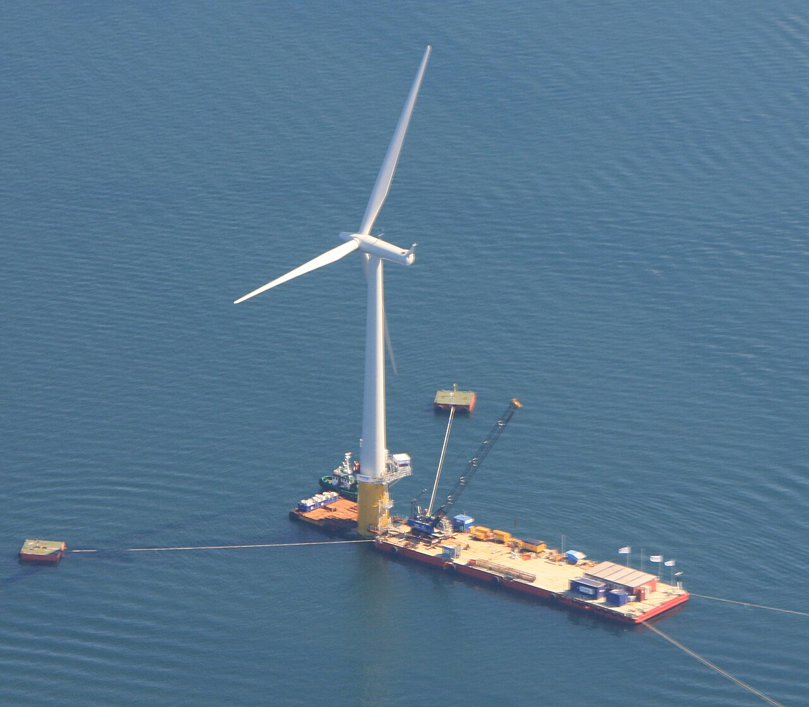
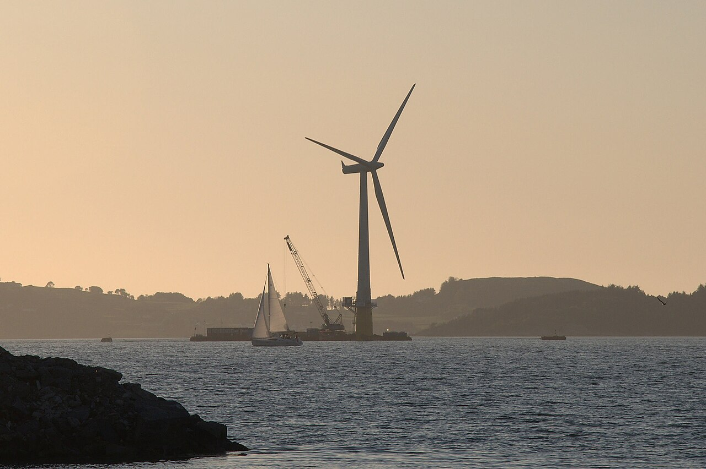
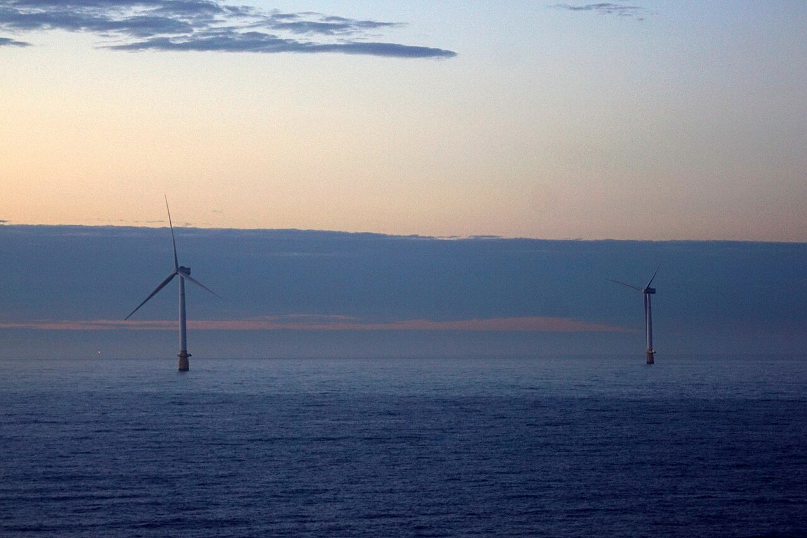

Hywind Demo, Norge
Foto: Jarle Vines (Jarvin), 2009. CC BY-SA 3.0. Bildet er et ekte fotografi av den tidlige Hywind-turbinen.
Se original og lisens ↗Langt ute til havs står vindturbiner på flytende fundamenter. Her kan kraftige vindressurser utnyttes – selv der havet er for dypt for tradisjonelle vindturbiner.
Den samme energikjeden som i en vanlig kraftforsyning – men den begynner på et flytende fundament ute på havet. Trykk på de sju trinnene for å se hva som skjer.
Rotorbladene omdanner vindens bevegelsesenergi til rotasjon. Generatoren produserer strøm, og en dynamisk sjøkabel fører energien fra den flytende konstruksjonen videre.
Egen illustrasjon av en mulig framtidig forsyningskjede til land. Ikke en tegning av Hywind Tampen, som leverer strøm til Snorre- og Gullfaksplattformene. Anlegg, kabelruting og spenningsnivåer varierer mellom prosjekter. Lysprikkene symboliserer energioverføring – ikke elektroner som fysisk beveger seg én vei i AC-nettet.
Vindturbinen produserer elektrisitet på samme måte som landbasert vindkraft. Den store forskjellen er fundamentet under havoverflaten.
Vind skaper løftekraft på rotorbladene. Rotasjonen driver en generator, som omdanner mekanisk til elektrisk energi. Kraftelektronikk tilpasser strømmen til ønsket spenning og frekvens før den sendes videre.
Tilgjengelig effekt i vinden. Reell elektrisk effekt blir lavere og avhenger blant annet av effektkoeffisient, tap og turbinens merkeeffekt.
Turbinen står på en flyter som holdes på plass med ankerliner til havbunnen. Plattformen kan bevege seg med bølger og vind, mens forankringen begrenser bevegelsen.
En dynamisk kabel må tåle bevegelsene mellom flyteren og den faste kabeltraseen på havbunnen. Flytende løsninger åpner for havområder der bunnfaste fundamenter blir vanskelige eller uøkonomiske.
Bevegelsesenergi gir dreiemoment på rotorbladene.
Rotasjon skaper elektrisk energi gjennom elektromagnetisk induksjon.
Omformere styrer kraftleveransen og tilpasser strømmen til nettet.
Transformatorer tilpasser spenningen for videre overføring.
Flytende havvind er fortsatt en ung teknologi. Derfor er det viktig å skille mellom installert effekt (MW), forventet årsproduksjon (GWh/år) og faktisk målt energi (GWh).
Equinors årsrapport 2025 oppgir 0,13 TWh i 2024 og 0,17 TWh i 2025 for Hywind Tampen. Omregnet med 1 TWh = 1 000 GWh. [4]
Viktig: Dette er rapporterte årstall, ikke anleggets teoretiske eller planlagte produksjon. Equinor har også tidligere brukt rundt 400 GWh per år som planleggingsanslag. [5]
GWEC oppgir totalt 278 MW globalt. Resterende kapasitet ligger blant annet i Japan og Spania. Dette er MW (effekt), ikke årlig GWh (energi). [3]
En fullstendig, sammenlignbar serie med årlig faktisk strømproduksjon fra bare flytende havvind globalt er ikke dokumentert i kildene som brukes her. Vi viser derfor verifiserte årsverdier for Norge og global installert effekt – uten å framstille kapasitet som produksjon.
Flytende havvind kan utnytte vindressurser over dypt hav. Men videre utbygging avhenger av kostnader, teknologi, nettløsninger og tillatelser.
Større turbiner kan gi mer effekt per fundament. Industrien arbeider også med mer standardiserte flytere, rimeligere forankring, bedre dynamiske kabler og smartere overvåking av anleggene.
Målet er lavere kostnad per produsert kWh, men det er usikkert hvor raskt kostnadene faller.
Store havdyp gjør flytende konsepter særlig aktuelle i norske farvann. Samtidig er teknologien mindre moden enn bunnfast havvind, og norske myndigheter peker på høye utbyggingskostnader. [6]
Utbyggingstakt og faktisk framtidig kraftproduksjon er avhengig av investeringsbeslutninger og rammevilkår, ikke bare vindressursene.
Teknikk: pålitelig forankring, levetid for dynamiske kabler, vedlikehold i krevende sjø og stabil nettilknytning. Økonomi: serieproduksjon, havner, fartøy og finansiering. Samfunn og natur: hensyn til fiskeri, skipsfart, fugleliv og andre interesser til havs.
Fotografier av faktiske flytende vindturbiner. Bildene er lagret sammen med nettsiden. Foto, kilde og lisensinformasjon finner du under bildene.

Foto: Jarle Vines (Jarvin), 2009. CC BY-SA 3.0. Bildet er et ekte fotografi av den tidlige Hywind-turbinen.
Se original og lisens ↗
Foto: Lars Christopher, 2009. CC BY-SA 2.0. Bildet viser montering av en fullskala flytende turbin.
Se original og lisens ↗
Fotografi av flytende havvind utenfor Peterhead i Skottland. Se Commons for fotograf, dato og lisensvilkår.
Se original og lisens ↗Fotografiene er lagret lokalt i bildemappen og vises automatisk. Lenken ved hvert foto går til originalfilen og lisensen på Wikimedia Commons. Husk å beholde fotografkreditering og følge vilkårene for CC BY-SA-lisensene.
Fakta er hentet fra operatører, bransjestatistikk og offentlige rapporter. Illustrasjoner og energikjeden er egne forenklede prinsippskisser.
Ferdigstilt november 2026 · Kontroller alltid siste oppdatering før innlevering. Bildelisenser: se original Commons-side under hvert fotografi.